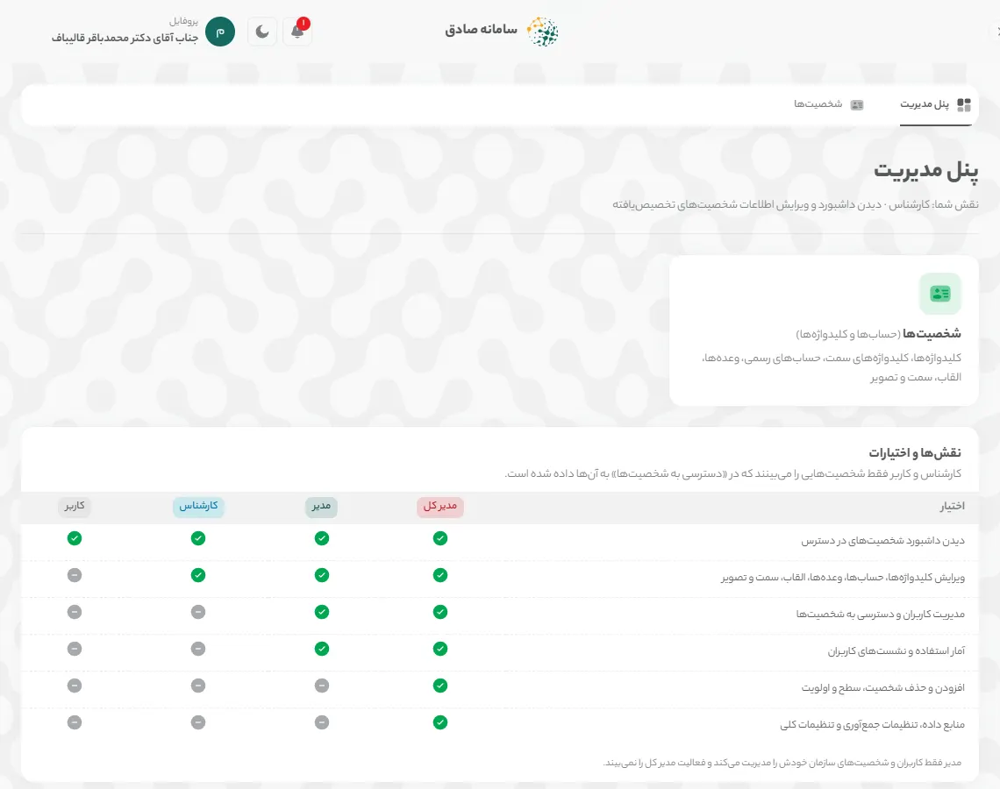
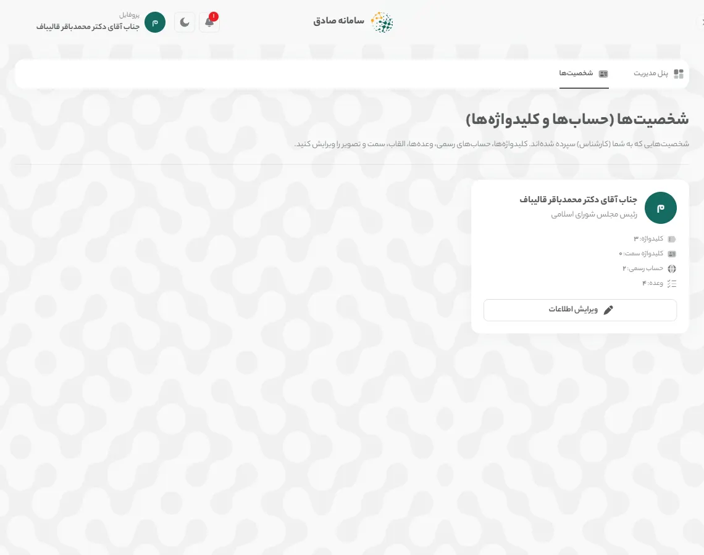
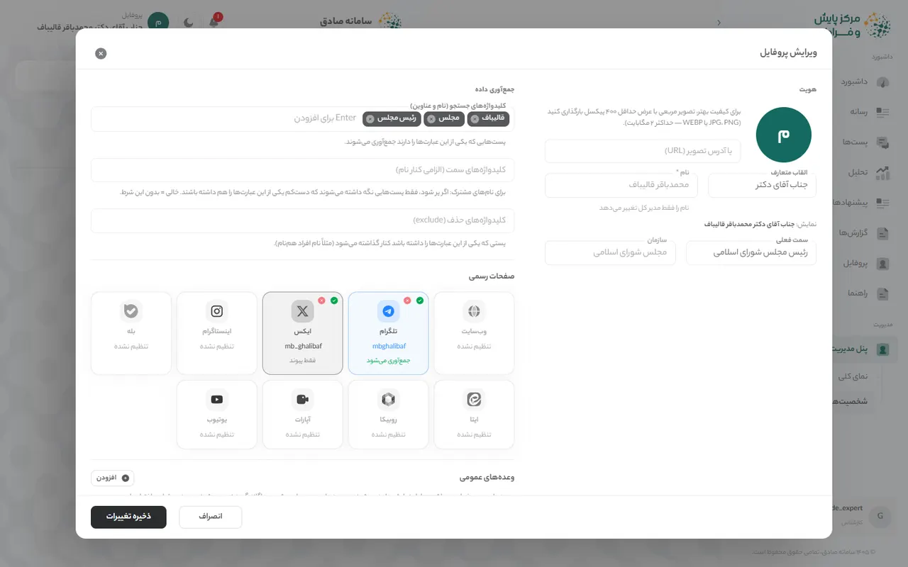
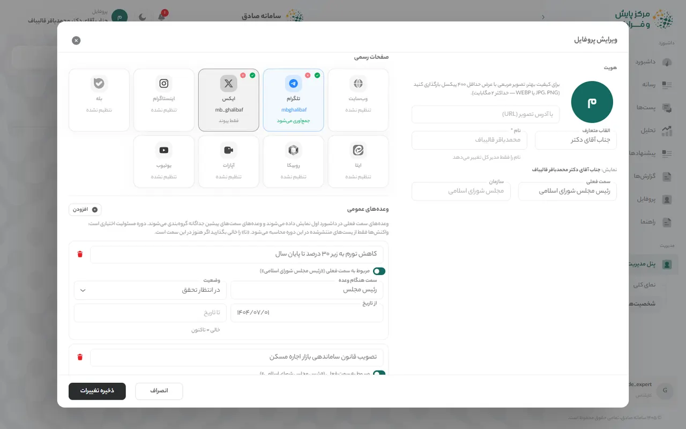
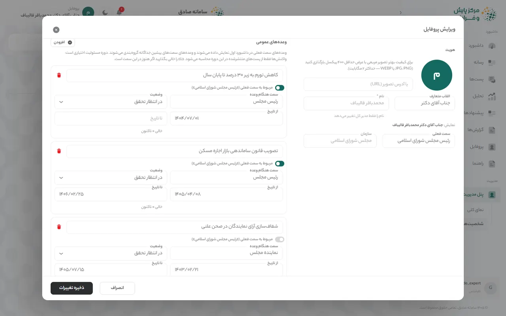

راهنمای کارشناس
کارشناس با مجوز مدیر، اطلاعات شخصیتهایی را که به او سپرده شده بهروز نگه میدارد و همه امکانات کاربر را هم دارد.
چه کارهایی میتوانید بکنید
- همه کارهای کاربر (ورود، داشبورد، فیلترها، گزارش)
- ویرایش القاب، سمت فعلی و تصویر شخصیتهای سپردهشده
- ویرایش کلیدواژههای جستجو، کلیدواژههای سمت و کلیدواژههای حذف
- افزودن و ویرایش صفحات رسمی در سکوها
- ثبت وعدهها با سمت و دوره مسئولیت
همه آنچه در «راهنمای کاربر» آمده برای این نقش هم کاربرد دارد.
۱. ویرایش اطلاعات شخصیت
کارشناس اطلاعات شخصیتهایی را که به او سپرده شده ویرایش میکند: القاب، سمت، تصویر، کلیدواژهها، صفحات رسمی و وعدهها.
باز کردن پنل مدیریت
در منوی کنار صفحه «پنل مدیریت» و سپس «شخصیتها» را باز کنید. جدول «نقشها و اختیارات» در «نمای کلی» نشان میدهد هر نقش چه کارهایی میتواند بکند.

تصویر: «پنل مدیریت» از دید کارشناس انتخاب شخصیت
در «شخصیتها (حسابها و کلیدواژهها)» فقط شخصیتهایی را میبینید که در «دسترسی به شخصیتها» به شما داده شده است. روی کارت شخصیت «ویرایش اطلاعات» را بزنید. با «جستجوی نام، سمت یا کلیدواژه» شخصیت را سریعتر پیدا کنید.

تصویر: فهرست شخصیتهای سپردهشده هویت و کلیدواژهها
در پنجره «ویرایش پروفایل»، بخش «هویت» تصویر، «القاب متعارف» (مثلاً جناب آقای دکتر) و «سمت فعلی» را دارد. «نام» و «سازمان» را فقط مدیر کل تغییر میدهد. در «کلیدواژههای جستجو (نام و عناوین)» عبارت را بنویسید و Enter بزنید؛ «کلیدواژههای سمت (الزامی کنار نام)» برای نامهای مشترک است و «کلیدواژههای حذف (exclude)» پستهای افراد همنام را کنار میگذارد.

تصویر: پنجره «ویرایش پروفایل»: هویت و کلیدواژهها صفحات رسمی
در «صفحات رسمی» روی کارت هر سکو بزنید تا «نام کاربری / آدرس کانال» را وارد کنید. «تأیید شده» یعنی صفحه متعلق به خود شخصیت است و با «فعال» جمعآوری پستهای آن روشن میشود. وضعیت هر کارت «جمعآوری میشود»، «فقط پیوند»، «غیرفعال» یا «تنظیم نشده» است.

تصویر: بخش «صفحات رسمی» وعدهها
در «وعدههای عمومی» با «افزودن» وعده تازه بسازید و متن آن را بنویسید. اگر وعده مربوط به سمت فعلی نیست، کلید «مربوط به سمت فعلی» را خاموش و «سمت هنگام وعده» را وارد کنید. «وضعیت» (در انتظار تحقق، محققشده، محققنشده) و دوره مسئولیت («از تاریخ» و «تا تاریخ»؛ خالی یعنی تاکنون) را مشخص کنید.

تصویر: بخش «وعدههای عمومی» ذخیره
«ذخیره تغییرات» را بزنید. تغییر کلیدواژهها و صفحات رسمی از جمعآوری بعدی اثر میگذارد.
نکته: اگر شخصیتی در فهرست شما نیست، از مدیر بخواهید در «دسترسی به شخصیتها» آن را به شما بدهد.
واژهنامه کارتها
هر کارت داشبورد در یک جمله. توضیح کامل، نحوه محاسبه و منبع داده هر کارت در نماد (i) کنار عنوان آن است.
صفحه «داشبورد»
- شاخص سلامت اعتبار
- تراز کلی احساسات کاربران نسبت به این شخصیت، روی مقیاس ۰ تا ۱۰۰.
- خلاصه هوش مصنوعی
- خلاصه متنی وضعیت فضای مجازی درباره این شخصیت در سه بند کوتاه: وضعیت کلی احساسات، موضوعات و پلتفرمهای غالب، و مهمترین هشدار یا فرصت.
- رادار بحران
- پنج نشانه زودهنگام بحران رسانهای: احساسات منفی، سرعت انتشار، بازتاب صفحات رسمی، تأثیرگذاری و تعاملات.
- روند احساسات
- تعداد پستهای مثبت، خنثی و منفی در هر روز؛ در نمای ۲۴ ساعت، در هر ساعت.
- طیف سیاسی
- پستهای هر جناح سیاسی درباره این شخصیت و اینکه چه سهمی از آنها مثبت، خنثی یا منفی است.
- هشتگها و موضوعات داغ
- موضوعات و هشتگهایی که بیشترین تکرار را در پستهای مرتبط داشتهاند.
- پربازدیدترین محتواها
- پستهایی درباره این شخصیت که بیشترین بازدید را داشتهاند.
- منابع داده
- تعداد پستهای مرتبط با این شخصیت در هر پلتفرم.
صفحه «تحلیل»
- وضعیت کلان کشور
- مهمترین رویدادهای امروز و دیروز کشور در چهار حوزه: فرهنگی و اجتماعی، سیاسی و دیپلماتیک، امنیتی و نظامی، اقتصادی و معیشتی؛ بههمراه رویدادهای مرتبط با خود شخصیت.
- چشمانداز عمومی
- چشمانداز عمومی: سهم هر حالت احساسی (امید، نگرانی، اطمینان و …) در پستهای مرتبط.
- ابر واژگان
- کلیدواژههای پرتکرار در گفتگوها درباره این شخصیت؛ هرچه واژه بزرگتر، پرتکرارتر.
- حسابهای ربات و انسانی
- چه سهمی از حسابهایی که درباره این شخصیت نوشتهاند احتمالاً ربات یا مشکوکاند، و مشکوکترین حسابها کداماند.
- تحلیل شکاف روایت
- چه سهمی از بحث مردم به روایتهایی میپردازد که شخصیت در صفحات رسمیاش مطرح میکند، و مردم خارج از این روایتها درباره چه موضوعاتی مینویسند.
صفحه «رسانه»
- صفحات رسمی
- کانالها و صفحات رسمی این شخصیت که در سامانه پایش میشوند.
- رصد وعدهها
- وعدههای ثبتشده این شخصیت، سمت و دوره مسئولیتی که وعده در آن داده شده، و واکنش مردم به هر کدام.
- تحلیل محتوای منتشرشده
- حجم، بازدید، لایک و بازنشر محتوای منتشرشده در صفحات رسمی، هفته به هفته.
- تایملاین یکپارچه
- آخرین پستهای منتشرشده در صفحات رسمی، به ترتیب زمان.
صفحه «پستها»
- خلاصه پلتفرمها
- تعداد کل پستهایی که در هر پلتفرم درباره این شخصیت منتشر شده است.
- نقشه تأثیرگذاران
- حسابهایی که بیشترین بازدید را در گفتگو درباره این شخصیت داشتهاند و موضعشان.
- پربازدیدترین پستها
- پستهایی با بیشترین تعداد بازدید.
- پربحثترین پستها
- پستهایی که بیشترین بحث و نظر را برانگیختهاند.
- پرتکرارترین پستها
- پستهایی که بیشتر از بقیه بازنشر یا فوروارد شدهاند.
صفحه «پیشنهادها»
- پیشنهادهای امروز
- پیشنهادهای عملیاتی برای واکنش رسانهای.
- شبیهساز سناریو
- شبیهساز سناریو: یک اتفاق فرضی بنویسید تا واکنش احتمالی فضای مجازی پیشبینی شود.
پرسشهای پرتکرار
چرا نمیتوانم نام یا سازمان شخصیت را تغییر دهم؟
نام، سازمان، سطح و اولویت شخصیت و افزودن یا حذف شخصیت فقط در اختیار مدیر کل است. اگر تغییری لازم است، به مدیر کل اطلاع دهید.
تغییر کلیدواژهها چه زمانی اثر میگذارد؟
کلیدواژهها و صفحات رسمی تازه در جمعآوریهای بعدی به کار میروند؛ زمان آخرین بهروزرسانی را در نوار بالای صفحه ببینید.
وعده سمت پیشین را چطور ثبت کنم؟
کلید «مربوط به سمت فعلی» را خاموش کنید و در «سمت هنگام وعده» سمت آن زمان را بنویسید. این وعده در «رصد وعدهها» زیر «وعدههای سمتهای پیشین» میآید.
چرا عددهای یک کارت با کارت دیگر کمی فرق دارد؟
هر کارت بازه و مجموعه پست خودش را دارد؛ مثلاً «منابع داده» همه پستهای منطبق با کلیدواژهها را میشمارد ولی «روند احساسات» فقط پستهای ذخیرهشده و تحلیلشده را. توضیح (i) هر کارت بازه و منبع آن را میگوید.
دادهها هر چند وقت بهروز میشوند؟
بسته به حجم پستهای هر شخصیت، از چند بار در روز تا هر چند روز یک بار. زمان دقیق آخرین بهروزرسانی در وسط نوار بالای صفحه آمده است.
فیلتر سکوها روی خلاصه هوش مصنوعی اثر ندارد؟
خیر. «خلاصه هوش مصنوعی»، «پیشنهادهای امروز» و «وضعیت کلان کشور» همیشه از همه سکوها و آخرین جمعآوری ساخته میشوند و یادداشت زیر کارت این را میگوید. «تحلیل شکاف روایت» برای سکوها و بازه انتخابی دوباره شمرده میشود.